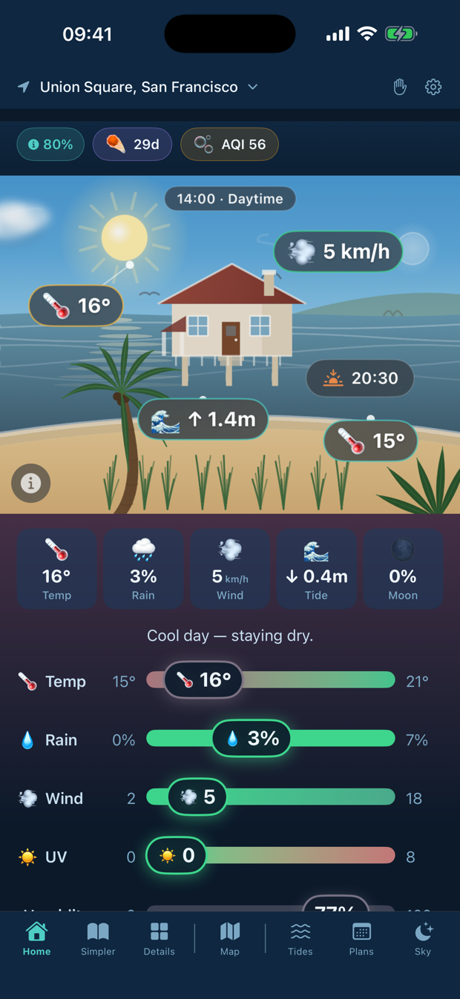
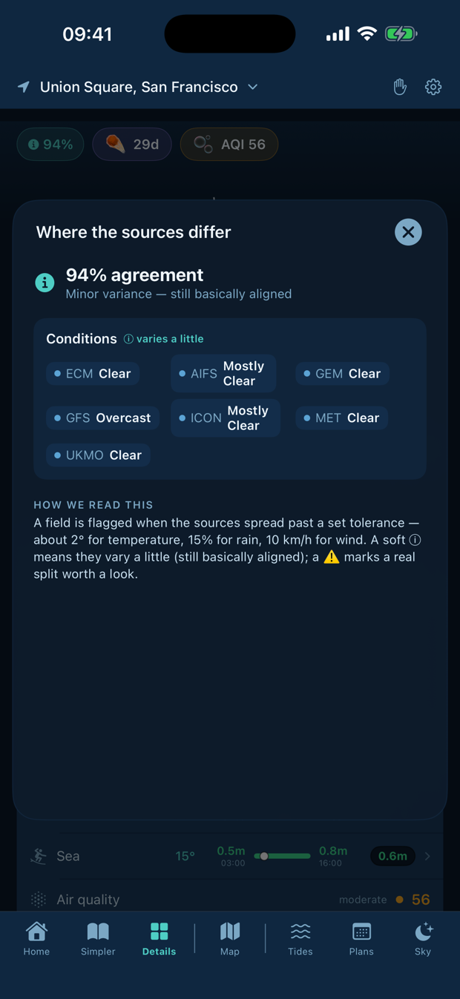

Most weather apps pick one model and hide the rest. Sky Warden reads many of the world's leading forecast models at once — and tells you the answer, how sure it is, and exactly where they disagree.


A confident forecast that turns out wrong is worse than no forecast. Sky Warden never pretends to be more certain than the models actually are.
Every forecast carries how much the models actually agree — not a marketing number.
Tap the confidence pill to see each model's value side by side, and how far apart they are.
“It says rain, it's dry.” Correct it, and Sky Warden respects your reading.
One calm app for the whole picture — reconciled, hour by hour, for your exact place.
A hand-drawn view that redraws with the real sun, cloud, rain, wind, waves and moon — day into night.
Temperature, rain, wind, UV and humidity each with their own timeline. Rain hides the dry hours so you see when it actually rains.
Tide curve, waves, period and sea temperature — plus live rain radar you can play through.
When the sun's strong enough to run the dishwasher or charge — and, in supported regions, how clean the grid is right now.
Reads your calendar on-device and flags weather that threatens your outdoor events.
Meteor showers, eclipses, moon phases and space-weather news.